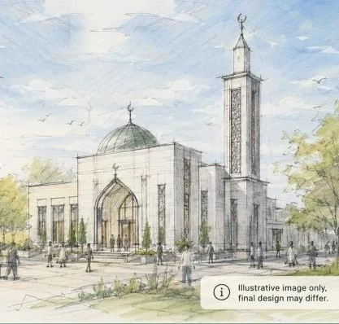

Nowhere permanent to pray
The five daily prayers, Jumu‘ah, Taraweeh and Eid all depend on whatever space can be borrowed or booked. Nothing about that is guaranteed from one year to the next.
Gerrards Cross Muslim Association
There has never been a masjid in this town. Our vision is a welcoming place for prayer, community gatherings, learning and support — for local Muslims today, and for the generations after us. We are raising £2 million towards land, planning, building work and materials, in shaa Allah.
Donations are collected and held by Crowdfunder UK — not by us directly.
“Whoever builds a mosque for Allah, Allah will build for him a house like it in Paradise.”
Narrated by Uthman ibn Affan — Sahih al-Bukhari 450, Sahih Muslim 533
Our aim
Build the first masjid in Gerrards Cross, in shaa Allah, to serve the local Muslim community and future generations.
We are planning to build a new mosque in Gerrards Cross, in shaa Allah. Our vision is to create a welcoming place for prayer, community gatherings, learning and support for local Muslims.
We are raising funds to help with the cost of land, planning, building work, materials and the other expenses needed to make this project possible. Every donation, big or small, will bring us closer to opening the first mosque in Gerrards Cross.
May Allah reward you for your support, and make it ongoing charity for you and your family.
The need
Not a small one. Not a temporary one. None at all. That single fact shapes ordinary life for every Muslim family in this town, and it is what this appeal exists to change.
The five daily prayers, Jumu‘ah, Taraweeh and Eid all depend on whatever space can be borrowed or booked. Nothing about that is guaranteed from one year to the next.
Iftars, Eid celebrations, talks, funerals, classes for children — all of it happens in a space borrowed for the afternoon, or it does not happen at all.
Qur’an, Arabic and Islamic studies mean travelling somewhere else, week after week — hours on the road that a masjid on our own doorstep would simply give back to families.
A community without a building has nowhere to be found. Nowhere for a family moving into the area to walk into, nowhere for a neighbour to visit, nowhere obvious to turn when help is needed.
Every year without a masjid is a year of borrowed rooms and journeys out of town. Building one ends that, permanently.
The vision
Prayer, community gatherings, learning and support — those four things are what the building is for. The design is still to be developed, and the detail will be shaped by what the community needs and what planning allows. This is what we are working towards.

A calm, light-filled hall for the five daily prayers, Jumu‘ah, Taraweeh and Eid — with proper wudhu facilities and space to grow into.
A dedicated women’s prayer area designed in from the start — not a partitioned afterthought, with its own entrance, facilities and clear view.
Qur’an, Arabic and Islamic studies for our children on their own doorstep, plus youth evenings, tutoring and holiday clubs.
Nikah ceremonies, iftars, funerals, food banks, blood drives, coffee mornings and interfaith evenings open to all our neighbours.
A ghusl room and janazah provision so that no family in our community has to travel to another county to bury their dead.
Step-free access, a lift, accessible washrooms, hearing loops and parking — so nobody is turned away by the building itself.
The arithmetic
No single donor is going to build this masjid. It gets built the way every masjid gets built — by ordinary people giving what they can, together.
400 households
giving
£5,000
≈ £417 a month for one year
2,000 supporters
giving
£1,000
≈ £84 a month for one year
8,000 people
giving
£250
≈ £21 a month for one year
Whichever way you cut it, this is within reach — if everybody moves. Give what you can, then send this page to five people who should see it.
What your money builds
Donations go towards the cost of land, planning, building work, materials and the other expenses needed to make this possible. It is sadaqah jariyah — ongoing charity. Every prayer prayed and every child taught in this building carries on your account long after you are gone.
£50
Somewhere for one person to put their forehead on the ground, five times a day, for years.
£100
Stocked mushafs and stands for the hall — used every single day by worshippers and students.
£250
Floor, carpet and foundation. Roughly the space one worshipper stands, bows and prostrates in.
£500
One of the taps and seats where every worshipper prepares before they pray. Used thousands of times a year.
£1,000
Light into the prayer hall. Named in our supporters’ record and remembered in the community’s du‘a.
£2,500
Desks, boards, shelving and books for one madrasah room — where our children learn to read the Qur’an.
£5,000
Part of the frame that physically holds the building up, for as long as the masjid stands.
£25,000+
Sponsor the mihrab, the library, the women’s hall or the funeral facility — in your name or in memory of someone you love.
Talk to us about major gifts →These show what a gift of each size helps pay for. They are illustrations, not itemised prices — the masjid is funded as one project.
Ready? Every pound goes through our Crowdfunder page.
Choose your amountThe plan
Four stages. We are transparent about exactly where we are in them.
Stage one
Identify and buy suitable land or a building in Gerrards Cross. The single biggest cost, and the one that makes everything after it possible.
Stage two
Architects, surveys and a planning application designed to sit well in Gerrards Cross — with consultation with our neighbours built in from the start.
Stage three
Groundworks, structure, fit-out. Reported back to donors as it happens, so you can watch what you paid for come out of the ground.
Stage four
The first adhan called in Gerrards Cross from a building that belongs to this community — and to everyone who helped build it.
Can’t give right now?
Not a passive repost. Send the link directly to ten people with one line about why it matters to you. That converts; a group-chat forward rarely does.
If you’re a UK taxpayer, Gift Aid adds 25p to every £1 at no cost to you. On a £1,000 gift that’s an extra £250 towards the masjid.
£100 a month for two years is £2,400 — far more than most people can give in one go. Steady income is what lets us commit to a site.
Many large employers match charitable giving pound for pound, and most staff never claim it. One form can double your donation.
A sponsored walk, a bake sale, a Qur’an completion, a sports tournament. Some of the biggest sums raised for masajid start with teenagers and a spreadsheet.
Ask for this project by name in your du‘a. Ask for the site, the permission, the funds and the people carrying it. It costs nothing and it is not nothing.
One last thing
They never met you. They will never know your name. They paid for it anyway, and you have benefited from it every day since. This is your turn to be that person for somebody who hasn’t been born yet.
May Allah reward you for your support, and make it ongoing charity for you and your family.
Questions about a large gift, a bequest or corporate sponsorship? Email us — a person replies.